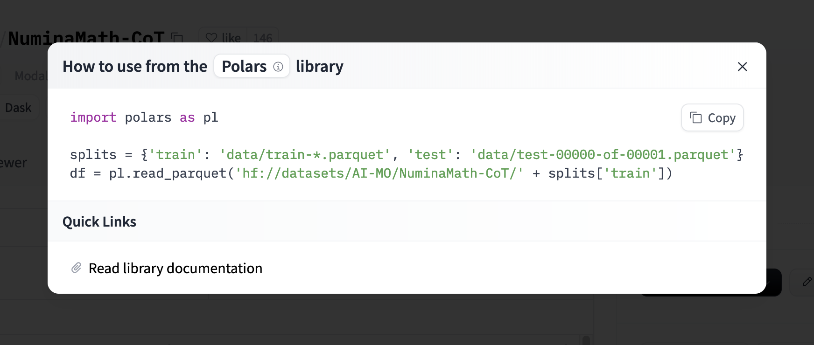
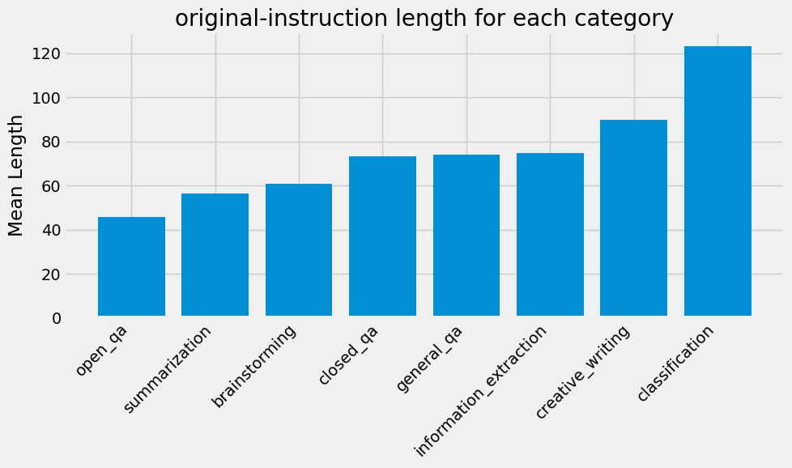

%pip install datasets polars matplotlib --quietNote: you may need to restart the kernel to use updated packages.Daniel van Strien
September 18, 2023
There is no native support for GroupBy in the Hugging Face datasets library but since there is a polars integration, we can use that to do groupby operations. In this notebook, I will show you how to do a groupby operation on a Hugging Face dataset using polars.
Note: you may need to restart the kernel to use updated packages./Users/davanstrien/Documents/daniel/new_blog/.venv/lib/python3.11/site-packages/tqdm/auto.py:21: TqdmWarning: IProgress not found. Please update jupyter and ipywidgets. See https://ipywidgets.readthedocs.io/en/stable/user_install.html
from .autonotebook import tqdm as notebook_tqdmWe can use the datasets library to load the dataset and then convert it to a polars DataFrame. After that, we can use the group_by method to group the data by a specific column and then apply an aggregation function to the grouped data.
{'id': '0',
'category': 'closed_qa',
'original-instruction': 'When did Virgin Australia start operating?',
'original-context': "Virgin Australia, the trading name of Virgin Australia Airlines Pty Ltd, is an Australian-based airline. It is the largest airline by fleet size to use the Virgin brand. It commenced services on 31 August 2000 as Virgin Blue, with two aircraft on a single route.[3] It suddenly found itself as a major airline in Australia's domestic market after the collapse of Ansett Australia in September 2001. The airline has since grown to directly serve 32 cities in Australia, from hubs in Brisbane, Melbourne and Sydney.[4]",
'original-response': 'Virgin Australia commenced services on 31 August 2000 as Virgin Blue, with two aircraft on a single route.',
'new-instruction': {'user_id': [None],
'value': ['When did Virgin Australia start operating?'],
'status': ['submitted']},
'new-context': {'user_id': [None],
'value': ["Virgin Australia, the trading name of Virgin Australia Airlines Pty Ltd, is an Australian-based airline. It is the largest airline by fleet size to use the Virgin brand. It commenced services on 31 August 2000 as Virgin Blue, with two aircraft on a single route. It suddenly found itself as a major airline in Australia's domestic market after the collapse of Ansett Australia in September 2001. The airline has since grown to directly serve 32 cities in Australia, from hubs in Brisbane, Melbourne and Sydney."],
'status': ['submitted']},
'new-response': {'user_id': [None],
'value': ['Virgin Australia commenced services on 31 August 2000 as Virgin Blue, with two aircraft on a single route.'],
'status': ['submitted']},
'external_id': None}Since this post was originally written polars have added a direct integration with the Hub so you can easily load the data directly into a polars DataFrame. You can load a parquet dataset as follows:
The Hub will directly show you how to load a dataset in polars for compatible datasets.

One very neat feature of polars is loading a subset of the column from a dataset in the Hub. This is very useful when you have a large dataset and you only need a few columns.
pl.read_parquet(
"hf://datasets/argilla/databricks-dolly-15k-curated-en/data/train-00000-of-00001-15a05aeec7726f9d.parquet",
columns=["category"],
)| category |
|---|
| str |
| "closed_qa" |
| "classification" |
| "open_qa" |
| "open_qa" |
| "closed_qa" |
| … |
| "brainstorming" |
| "summarization" |
| "open_qa" |
| "general_qa" |
| "general_qa" |
Let’s see how we can groupby the category column of this dataset and then get the mean length of the instruction column
grouped = df.group_by('category').agg(pl.col('original-instruction').str.len_bytes().alias('length').mean())
grouped| category | length |
|---|---|
| str | f64 |
| "open_qa" | 45.715868 |
| "classification" | 123.231273 |
| "summarization" | 56.284244 |
| "closed_qa" | 73.166758 |
| "brainstorming" | 60.71267 |
| "creative_writing" | 89.729958 |
| "general_qa" | 74.157919 |
| "information_extraction" | 74.921958 |
We can already get a good sense of how different categories compare in terms of the length of the instructions. We can also create a visualization to show this comparison.
import matplotlib.pyplot as plt
import matplotlib
matplotlib.style.use('fivethirtyeight')
categories = grouped['category']
lengths = grouped['length']
plt.figure(figsize=(10, 6))
plt.bar(categories, lengths)
plt.xticks(rotation=45, ha='right')
plt.ylabel('Mean Length')
plt.title('original-instruction length for each category')
plt.tight_layout()
plt.savefig('groupby-fig.png')
plt.show()
Since polars supports lazy evaluation, you can work with very large datasets. This is very useful when you have a dataset that is too large to fit in memory. You can perform operations on the dataset without loading the entire dataset into memory. For a Hub dataset we can use the scan_parquet method to load the dataset lazily.
You’ll see this returns a lazy DataFrame that you can use to perform operations on the dataset.
If we do a similar groupby operation on this dataset
you’ll see that we don’t get back an immediate result but a lazy DataFrame that we can use to perform operations on the dataset.
Where possible polars will also add some optimizations to the query to make it faster.
We can then use the collect method to get the result of the query.